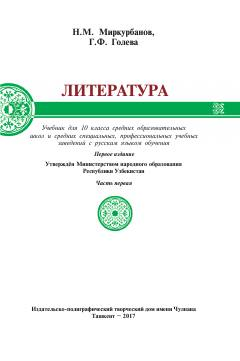

L10-sinflar uchun rus va jahon adabiyoti bo'yicha o'quv qo'llanma-xrestomatiya.
Ushbu o'quvchi-xrestomatiya rus adabiyoti va jahon adabiyotining XIX asrdagi namunalari, yozuvchilarning tarjimai holi hamda asarlari tahlilini o'z ichiga oladi. Kitob o'rta ta'lim maktablari va o'rta maxsus kasb-hunar ta'limi muassasalarining 10-sinf o'quvchilari uchun mo'ljallangan.